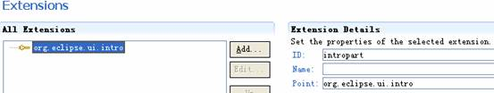
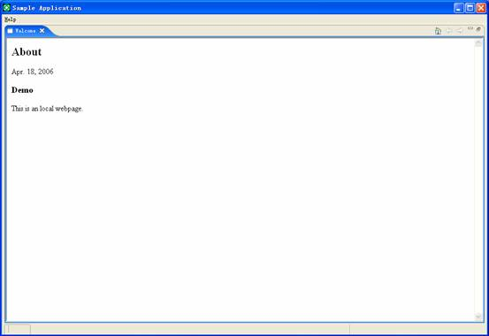

Intro page support in eclipse allows plug-ins to define pages that help introduce the product to the end user the first time the platform is started. This tutorial walks you through the process of creating a simple welcome page for an Eclipse Rich Client Platform (RCP) product.
By: Zhuo Zhang, IBM, zhuoz@cn.ibm.com
Eclipse allows you to define "welcome pages" for your product. Welcome pages are intended to guide users into discovering a product's functionality. Generally, they are shown the first time a product is started.
First, you should create a simple eclipse product with product id: com.sample.application.product. To simplify the implementation, we just define a perspective and simple view in it.
The general information for this product:
Picture 1
You can get the corresponding information in MANIFEST.MF:
Manifest-Version: 1.0 Bundle-ManifestVersion: 2 Bundle-Name: %pluginName Bundle-SymbolicName: com.sample.application; singleton:=true Bundle-Version: 1.0.0 Bundle-Activator: com.sample.application.SamplePlugin Bundle-Vendor: %providerName Bundle-Localization: plugin Require-Bundle: org.eclipse.ui, org.eclipse.core.runtime Eclipse-AutoStart: true Bundle-ClassPath: sampleproduct.jar Export-Package: com.sample.application, com.sample.application.view
Hint: programmer is preferred to modify the general information in GUI panel in Picture 1.
The plugin.xml for this product is:
1 <?xml version="1.0" encoding="UTF-8"?> 2 <?eclipse version="3.0"?> 3 <plugin> 4 <extension id="SampleApplication" name="SampleApplication" 5 point="org.eclipse.core.runtime.applications"> 6 <application> 7 <run class="com.sample.application.SampleApplication"/> 8 </application> 9 </extension> 10 <extension id="product" point="org.eclipse.core.runtime.products"> 11 <product application="com.sample.application.SampleApplication" 12 description="%productBlurb" name="Sample Application" 13 <property name="windowImages" value="winimage.gif "/> 14 <property name="appName" value="%appName"/> 15 </product> 16 </extension> 17 <extension point="org.eclipse.ui.perspectives"> 18 <perspective class="com.sample.application.SamplePerspective" fixed="false" 19 id="com.sample.application.SamplePerspective" name="%sampleperspective"/> 20 </extension> 21 <extension point="org.eclipse.ui.views"> 22 <view allowMultiple="false" class="com.sample.application.view.DefaultView" 23 icon="icons/navigator.gif" id="com.sample.application.view.DefaultView" 24 name="%sampleview"/> 25 </extension> 26 </plugin>
Line 4-9: define an application with application id: com.sample.application.SampleApplication (pluginID+"."+applicationID);
Line 10-16: define the product with product id: com.sample.application.product.
Product configuration link: http://help.eclipse.org/help31/index.jsp?topic=/org.eclipse.platform.doc.isv/guide/product_configproduct.htm
Hint: property "welcomePage" is discouraged in Eclipse 3.0 in favor of the
org.eclipse.ui.introextension point, which will be introduced in this article.
Line 17-20: define the perspective;
Line 21-25: define the sample view.
Select File > New > Project, select Plug-in Project in Plug-in Development and click Next. Input the project name as "com.sample.application.intro", unselect Create a Java project, click Next
Change the Plug-in Name to "%pluginName" and Plug-in Provider to "%providerName", click Finish.
Now you can see the new created project in your package explore. In this project, create a file named "plugin.properties" in the same folder with plugin.xml.
Open plugin.properties, add the following to its contents, and save it.
pluginName=Simple Product Intro providerName=ZZ
Hint: for things like %variableNamein plugin.xml and MANIFEST.MF, eclipse will automatically find them in
plugin.properties. In our example, Eclipse will change %pluginName to "Simple Product Intro" when the plug-in's name is displayed.Hint: it’s a good habit to define the meta-information such as name, version, and description in plugin.properties and use them by variable. It’s easy to maintain and provide international language support.
Double click plugin.xml, by default a plugin editor will be shown:
Hint: if eclipse doesn’t open the following editor, select the plugin.xml in Package Explore, right click, in popup menu select Open with > Plug-in Manifest Editor.
Select the "Extensions" tab, add an extension to the "org.eclipse.ui.intro" extension point, and set the value as follows:

Select "org.eclipse.ui.intro", right click, select New > intro, and set the value as follows:
Here we
directly use class org.eclipse.ui.intro.config.CustomizableIntroPart, it is
re-usable intro part class defined in the Eclipse platform. It is a
customizable intro part where its content can be customized based on a
configuration file (xml format) and its both its presentation can be customized
based on a set of css file, which is contributed using the
org.eclipse.ui.intro.config extension point. The configuration file will be
declared in following extension to org.eclipse.ui.intro.config and its content
will be shown in coming section.
Of course, you can use any class which implements the org.eclipse.ui.intro.IIntroPart
interface.
The page must be bound to an Eclipse product. Select org.eclipse.ui.intro, right click,
select New > introProductBinding, and set the value as follows:
Create an extension to org.eclipse.ui.intro, and set value as follows:
Now we link the intro part
(com.sample.application.intro) with an intro configuration (com.sample.application.introConfig),
and declare the concrete configuration file (introContent.xml). Select org.eclipse.ui.intro.config, right click, select New > config, and
set the value as follows:
For home-page-id and standby-page-id (optional), they should be page-ids defined in configuration file. (Link to page-id: http://help.eclipse.org/help31/topic/org.eclipse.platform.doc.isv/reference/extension-points/introContentFileSpec.html#e.page.) Select "com.sample.application.introConfig(config)", right click, select New > presentation, set the value as follows.
In Eclipse 3.0 or above, welcome page has two of modes:
home-page-id), the intro part takes over the main workbench area. standby-page-id), the intro part moves to the side, allowing the current
perspective to remain visible.The welcome page can switch between these two modes.
Then we
define a default implementation and a SWT implementation. In style field, we
define the default layout css file: shared.css.
For supported operation systems listed in default implementation, Eclipse will use the default implementation’s presentation style; for other operation systems, Eclipse will use swt(implementation) presentation style.
Create the following folders and files:
The key file to specify the contents is introContent.xml. You can find the XML schema definition from: http://help.eclipse.org/help31/index.jsp?topic=/org.eclipse.platform.doc.isv/reference/extension-points/introContentFileSpec.html
shared.css define the default full-style
layout for specified operating system; standby_root.css define stand-by layout for supported
OS; standby_swt.properties define the standby layout for unspecified OS;
swt.properties define the full-style layout for unspecified OS.
Following are the detail of introContent.xml:
1 <?xml version="1.0" encoding="utf-8" ?> 2 <introContent> 3 <page style="css/welcome/welcome.css" alt-style="css/welcome/swt.properties" id="overview" > 4 <group id="page-topbar" > 5 <img id="logo" style-id="topbar2" 6 src="./css/graphics/contentpage/banner_logo.jpg"/> 7 </group> 8 <group id="page-content"> 9 <text style-id="page-title" id="page-title">WELCOME</text> 10 <text style-id="page-description" id="page-description">Welcome! This is the 11 first welcome page for my product.</text> 12 <group label="Sample Link Actions" id="simple-links" style-id="welcome-group"> 13 14 <link label="Run Action Sample" 15 url="http://org.eclipse.ui.intro/runAction?pluginId=com.sample.application&class=com.sample.application.view.ShowViewAction" id="runAction" 16 style-id="welcome-link"> 17 <text>This is a sample link to run action.</text> 18 </link> 19 20 <link label="Show External Link Sample" 21 url="http://org.eclipse.ui.intro/openBrowser?url=http://www.eclipse.org"id="openBrowser" 22 style-id="welcome-link"> 23 <text>This is a sample to open a link in an new opened web brower.</text> 24 </link> 25 26 <link label="Show Internal Link Sample" 27 url="http://org.eclipse.ui.intro/openURL?url=./intro/css/welcome/about.html&pluginId=com.sample.application.intro" 28 id="openURL"style-id="welcome-link"> 29 <text>This is a sample to goto another internal link.</text> 30 </link> 31 32 <html label="Show Internal Link Sample" src="./css/welcome/bottom.html" br> 33 id="test" style-id="welcome-anotherlink"> 34 <text>This is a sample to goto another internal link.</text> 35 </html> 36 </group> 37 </group> 38 </page> 39 <page style="css/standby_root.css" alt-style="css/standby_swt.properties" id="standby" > 40 <title style-id="intro-header">Standby Intro</title> 41 <group id="links-background"> 42 <group id="page-links"> 43 <link label="Run Action Sample" 44 url="http://org.eclipse.ui.intro/runAction?pluginId=com.sample.application&class=com.sample.application.view.ShowViewAction" 45 id="runAction" style-id="welcome-link"> 46 <text>This is a sample link to run action.</text> 47 </link> 48 49 <link label="Show External Link Sample" url 50="http://org.eclipse.ui.intro/openBrowser?url=http://www.eclipse.org"id="openBrowser" 51 style-id="welcome-link"> 52 <text>This is a sample to open a link in an new opened web brower.</text> 53 </link> 54 55 <link label="Show Internal Link Sample" label="Show Internal Link 56 url="http://org.eclipse.ui.intro/openURL?url=./intro/css/welcome/about.html&pluginId=com.sample.application.intro" 57 id="openURL" style-id="welcome-link"> 58 <text>This is a sample to goto another internal link.</text> 59 </link> 60 </group> 61 </group> 62 </page> 63 </introContent>
Line2: The introContent element defines the body of the intro content file. The content file can be a group of pages, groups, and extensions to anchor points defined in other configurations. In this example, we define two groups: group overview and group standby.
Line 3: define the overview group, the general layout is defined in “welcome.css” and the alternative layout (SWT layout) is defined in “swt.css”.
Line 8-37: define the sample links and html contents
Line 14-18: define a link to run action. The source code for the com.sample.application is attached in apendix1.
Hint:the value of class should be the fully
qualified class name of the class that implements one of org.eclipse.ui.intro.config.IIntroAction, org.eclipse.jface.action.IAction, or org.eclipse.ui.IActionDelegate.
Line 20-24: define a link to show a page by opening a new browser
Line 26-30: define a link to show a page in welcome page
Line 32-35:
define a html element
Line 39: define the standby group (for stand-by style), the layout is defined in “standby_root.css” and the alternative layout (SWT layout) is defined in “standby_swt.properties”.
Line 41-61: define the same links as those in overview group.
The content of
standby_properties is:
1 standby.links-background.page-links.layout.vspacing
= 30
2 standby.show-link-description
= true
3 standby.show-home-page-navigation
= false
The complete properties file definition can be found in: org.eclipse.ui.intro\empty_swt.properties.
You can fined the declaration for
above three lines in empty_swt.properties:
……
<pageId>.show-link-description
= true/false
.show-link-description
= true/false
……
<pageId>.show-home-page-navigation
= true/false
.show-home-page-navigation
= true/false
……
<pageId>.<path_to_group>.layout.vspacing
= <integer>
1 public
class SampleActionBarAdvisor extends ActionBarAdvisor {
2
3 private IWorkbenchAction
intro;
4 public
SampleActionBarAdvisor(IActionBarConfigurer configurer) {
5 super(configurer);
6
7 }
8
9 protected void
makeActions(IWorkbenchWindow window) {
10 intro
= ActionFactory.INTRO.create(window);
11 }
12
13 protected void fillMenuBar(IMenuManager
menuBar) {
14 menuBar.add(createHelpMenu());
15 }
16
17 protected void
fillCoolBar(ICoolBarManager coolBar) {
18 IToolBarManager
toolBar = new ToolBarManager(coolBar.getStyle());
19 toolBar.add(new
Separator());
20 toolBar.add(intro);
21 coolBar.add(new
ToolBarContributionItem(toolBar,
22 "com.sample.application.SimpleToolBar"));
23 }
24
25 private MenuManager
createHelpMenu() {
26 MenuManager
menu = new MenuManager(
27 "&Help",
IWorkbenchActionConstants.M_HELP);
28 //
Welcome or intro page would go here
29 menu.add(intro);
30 menu.add(new
GroupMarker(IWorkbenchActionConstants.MB_ADDITIONS));
31 return
menu;
32 }
33 }
SampleActionBarAdvisor is a subclass of org.eclipse.ui.application.ActionBarAdvisor, it is used to define the menu and cool bar in our production.
Ø Line10 defines the action to call welcome page
Ø Line17-23 adds the action to cool bar
Ø Line25-31 creates a help menu and adds the action as its menu item.
Hint: org.eclipse.ui.actions.ActionFactory provides the access to
standard actions provided by the workbench, such as copy, paste, about,
welcome, etc.
The welcome page:
Icon when “Run Action Sample” is hovered:
When click “Run Action Sample”, the sample view will be shown and the welcome page will switch to standby style.
When click “Show Internal Link”, following screen shown:

Now you have created the first welcome page for your product. Eclipse provides an easy way for users to get familiar with your product when they run your product.
The completed sample is available. Following are the useful links related with eclipse intro part:
. http://help.eclipse.org/help31/topic/org.eclipse.platform.doc.isv/guide/workbench_advext_intro.htm
Appendix 1: source code for com.sample.application
package com.sample.application.view;
import org.eclipse.jface.action.Action;
import org.eclipse.ui.IViewReference;
import org.eclipse.ui.IWorkbenchPage;
import org.eclipse.ui.PlatformUI;
public class ShowViewAction extends Action {
public ShowViewAction() {
super();
}
public void run() {
IWorkbenchPage workbenchPage = PlatformUI.getWorkbench()
.getActiveWorkbenchWindow().getActivePage();
IViewReference[] ivf = workbenchPage.getViewReferences();
try {
int i = ivf.length;
for (; i-- > 0;) {
if (ivf[i].getId().equals(
"com.sample.application.view.DefaultView")) {
workbenchPage.activate(ivf[i].getView(true));
break;
}
}
} catch (Exception e1) {
e1.printStackTrace();
}
}
}